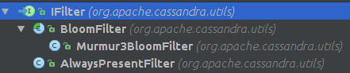

根据CFMetaData中的bloomFilterFpChance和Key的个数，计算出BloomSpecification从而创建BloomFilter． FilterFactory创建BloomFilter, 对于OffHeap内存的创建，修改, 获取，参考OffHeap一节
public static class BloomSpecification
{
final int K; // number of hash functions.
final int bucketsPerElement;
}
public static IFilter getFilter(long numElements, double maxFalsePosProbability, boolean offheap)
{
int bucketsPerElement = BloomCalculations.maxBucketsPerElement(numElements);
BloomCalculations.BloomSpecification spec = BloomCalculations.computeBloomSpec(bucketsPerE lement, maxFalsePosProbability);
return createFilter(spec.K, numElements, spec.bucketsPerElement, offheap);
}
private static IFilter createFilter(int hash, long numElements, int bucketsPer, boolean offheap)
{
long numBits = (numElements * bucketsPer) + BITSET_EXCESS;
IBitSet bitset = offheap ? new OffHeapBitSet(numBits) : new OpenBitSet(numBits);
return new Murmur3BloomFilter(hash, bitset);
}
在BloomFilter中对每个Key计算hash值，存入OffHeapBitSet.
public void add(ByteBuffer key)
{
long[] indexes = indexes(key);
for (int i = 0; i < hashCount; i++)
{
bitset.set(indexes[i]);
}
}
// note that this method uses the threadLocal that may be longer than hashCount
// to avoid generating a lot of garbage since stack allocation currently does not support stores
// (CASSANDRA-6609). it returns the array so that the caller does not need to perform
// a second threadlocal lookup.
private long[] indexes(ByteBuffer key)
{
// we use the same array both for storing the hash result, and for storing the indexes we return,
// so that we do not need to allocate two arrays.
long[] indexes = reusableIndexes.get();
hash(key, key.position(), key.remaining(), 0L, indexes);
setIndexes(indexes[0], indexes[1], hashCount, bitset.capacity(), indexes);
return indexes;
}
private void setIndexes(long base, long inc, int count, long max, long[] results)
{
for (int i = 0; i < count; i++)
{
results[i] = FBUtilities.abs(base % max);
base += inc;
}
}